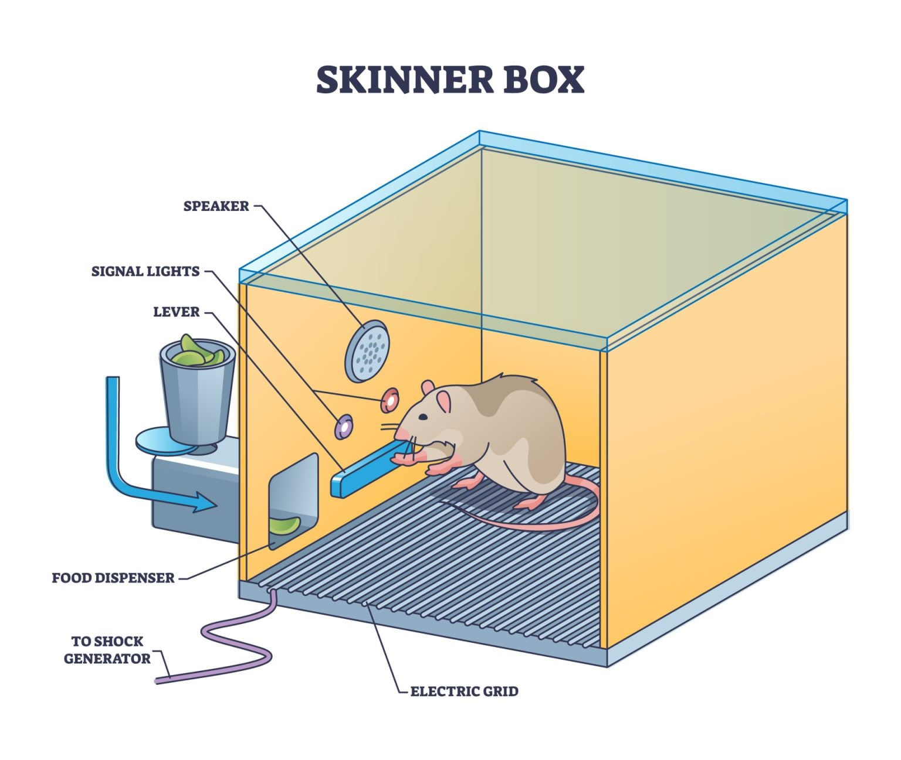
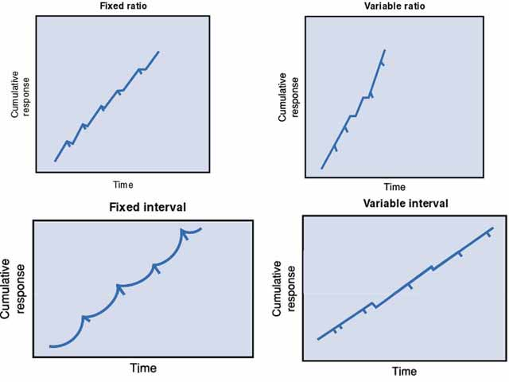

B.F. Skinner, um psicólogo americano do século XX, é amplamente reconhecido por suas contribuições ao campo do condicionamento operante. Ele desenvolveu a "caixa de Skinner", um dispositivo experimental que permitia estudar o comportamento de animais, como ratos e pombos, em resposta a diferentes estímulos e consequências. A caixa de Skinner tinha uma alavanca ou botão que os animais podiam pressionar para receber uma recompensa, como comida, ou para evitar uma punição, como um choque elétrico. Através desses experimentos, Skinner demonstrou como o comportamento pode ser moldado e mantido por meio de reforços positivos e negativos. O condicionamento operante é fundamental para entender como aprendemos e nos adaptamos ao nosso ambiente, influenciando desde a educação até a modificação de comportamentos indesejados.
O condicionamento operante, também conhecido como condicionamento instrumental, é uma forma de aprendizagem associativa na qual um organismo aprende a associar um comportamento à sua consequência. Quando uma ação é seguida por uma recompensa, é mais provável que a repitamos; quando é seguida por uma punição, tendemos a evitá-la. A teoria do condicionamento operante de B.F. Skinner mostra como recompensas e consequências moldam o comportamento, desde truques em animais até a motivação humana na escola e no trabalho.
A Lei do Efeito de Thorndike serve como princípio fundamental sobre o qual B.F. Skinner construiu toda a sua teoria do condicionamento operante. A lei de Thorndike, desenvolvida a partir de seus experimentos com gatos usando caixas-problema, é a ideia central que relaciona o comportamento aos seus resultados. Ela afirma:
Em essência, a Lei do Efeito introduziu a ideia de aprendizado por meio das consequências – que as consequências de uma resposta determinam a probabilidade de essa resposta se repetir.
Em 1948, Skinner — psicólogo americano — estudou o condicionamento operante realizando experimentos com animais, que ele colocava em uma Caixa de Skinner, semelhante à caixa de quebra-cabeça de Thorndike. Ademais, ele substituiu os termos subjetivos de Thorndike (“satisfatório” e “desconfortável”) por termos observáveis e funcionais: reforço (para fortalecer um comportamento) e punição (para enfraquecer um comportamento).
A caixa de Skinner, também conhecida como câmara de condicionamento operante, é um dispositivo usado para registrar objetivamente o comportamento de um animal em um curto período de tempo. Um animal pode ser recompensado ou punido por apresentar certos comportamentos, como pressionar uma alavanca (no caso de ratos) ou bicar uma tecla (no caso de pombos).

Skinner identificou três tipos de respostas, ou operantes, que podem seguir o comportamento:
Todos nós experimentamos, desde cedo, como reforçadores e punições moldam nosso comportamento. Quando crianças, frequentemente experimentávamos diferentes ações e aprendíamos rapidamente quais traziam recompensas e quais levavam a resultados desagradáveis. Por exemplo, imagine que você experimentou fumar na escola. Se a principal consequência fosse obter a aprovação do grupo ao qual você queria pertencer, essa aceitação social funcionaria como um reforço positivo, aumentando a probabilidade de você fumar novamente. Se você fosse pego, punido pelos professores, suspenso e enfrentasse a desaprovação dos seus pais, esses resultados negativos serviriam como punição, tornando muito menos provável que você repetisse o comportamento.
No reforço positivo, um comportamento é fortalecido porque é seguido por um estímulo recompensador, aumentando a probabilidade de que o comportamento seja repetido. Os reforçadores primários são naturalmente recompensadores porque satisfazem necessidades biológicas básicas, como comida, água ou calor. Esses reforçadores não precisam ser aprendidos. Os reforçadores secundários adquirem seu poder por meio da associação com os reforçadores primários. Exemplos incluem dinheiro, notas ou elogios. Embora não satisfaçam diretamente uma necessidade biológica, podem ser motivadores igualmente poderosos, pois representam o acesso a recompensas primárias.
Skinner demonstrou o reforço positivo usando seu famoso experimento da Caixa de Skinner: Ele colocou um rato faminto dentro de uma caixa com uma alavanca. Enquanto o rato explorava, acidentalmente pressionou a alavanca, fazendo com que uma bolinha de comida caísse em uma bandeja. Após várias tentativas, o rato aprendeu rapidamente a pressionar a alavanca deliberadamente para obter comida. A recompensa alimentar funcionou como um reforço positivo, fortalecendo o comportamento de pressionar a alavanca. Este experimento ilustrou como o reforço consistente pode moldar o comportamento por meio de associações aprendidas.
O Princípio de Premack expande o conceito de reforço positivo, sugerindo que uma atividade preferida (um comportamento de alta probabilidade) pode ser usada para motivar uma atividade menos preferida (um comportamento de baixa probabilidade). Por exemplo, uma criança pode ouvir: "Primeiro coma seus vegetais, depois você poderá comer a sobremesa." Essa abordagem — frequentemente chamada de "Regra da Vovó" — associa uma atividade desejável (comer sobremesa) a uma menos prazerosa (comer vegetais), aumentando assim a probabilidade do comportamento menos preferido. O Princípio de Premack é considerado uma das estratégias mais eficazes e positivas para a modificação de comportamento, pois utiliza preferências naturais em vez de punição para moldar o comportamento.
Recompensas externas contínuas podem levar à "dependência de recompensa", onde os indivíduos realizam tarefas unicamente por incentivos tangíveis em vez de satisfação pessoal. Em ambientes como escolas ou locais de trabalho, essa dependência pode diminuir a motivação intrínseca e fazer com que o comportamento se desfaça quando as recompensas são retiradas.
O uso excessivo de reforçadores externos pode ofuscar as motivações internas, comprometendo potencialmente o engajamento ou a criatividade a longo prazo. Equilibrar recompensas externas com o apoio aos interesses e objetivos pessoais dos alunos pode promover uma mudança de comportamento sustentável e autodirigida.
O reforço negativo envolve a remoção ou a evitação de um estímulo desagradável após um comportamento, o que fortalece esse comportamento. É chamado de "negativo" não porque seja ruim, mas porque algo desagradável é removido, tornando o resultado gratificante para o indivíduo. Em outras palavras, o reforço negativo aumenta a probabilidade de um comportamento ocorrer porque ajuda uma pessoa ou animal a escapar ou evitar desconforto. Imagine que você tem uma regra: se você se esquecer de fazer a lição de casa, terá que dar £5 ao seu professor. Para evitar perder o dinheiro, você começa a fazer a lição de casa no prazo. A remoção da consequência desagradável (pagar £5) reforça negativamente o comportamento desejado (fazer a lição de casa).
O psicólogo demonstrou o reforço negativo utilizando seu experimento da Caixa de Skinner. Ele colocou um rato em uma caixa com o piso eletrificado, que fornecia uma leve corrente elétrica. Ao se movimentar, o rato acidentalmente pressionou uma alavanca, que imediatamente desligou a corrente. Após várias tentativas, o rato aprendeu a pressionar a alavanca assim que era colocado na caixa. A remoção do estímulo desagradável (o choque) reforçou o comportamento de pressionar a alavanca, tornando mais provável que ele ocorresse novamente.
Skinner também demonstrou como o reforço negativo poderia envolver evitar completamente experiências desagradáveis. Em uma variação do experimento, uma luz foi acesa pouco antes da ativação da corrente elétrica. O rato aprendeu a pressionar a alavanca quando a luz aparecia, impedindo assim que a corrente elétrica fosse ligada.
Ambas as formas de aprendizagem demonstram que o reforço negativo fortalece o comportamento, permitindo que o organismo evite ou escape do desconforto — uma distinção importante em relação à punição, que visa enfraquecer o comportamento.
No condicionamento operante, punição é qualquer consequência que reduza a probabilidade de um comportamento ser repetido no futuro. Funciona tornando um comportamento menos atraente ou mais desagradável de se realizar. A eficácia da punição depende de vários fatores: momento, consistência, intensidade e contexto. A punição é mais eficaz quando aplicada imediata e consistentemente após o comportamento indesejado, mas punições excessivas ou severas podem levar ao medo, à evitação ou à agressão, em vez de uma mudança genuína de comportamento. São dois métodos distintos de punição usados para diminuir a probabilidade de um comportamento específico ocorrer novamente, mas envolvem diferentes tipos de consequências:
A punição positiva consiste em adicionar um estímulo aversivo ou algo desagradável imediatamente após um comportamento para diminuir a probabilidade de esse comportamento ocorrer novamente no futuro. Ela enfraquece o comportamento alvo associando-o a uma consequência indesejável. Por exemplo, uma criança recebe uma bronca (um estímulo aversivo) dos pais imediatamente após bater no irmão para ela não repetir esse comportamento.
A punição negativa consiste em remover um estímulo desejável ou algo recompensador imediatamente após um comportamento, a fim de diminuir a probabilidade de esse comportamento ocorrer novamente no futuro. Ela enfraquece o comportamento alvo ao retirar algo que o indivíduo valoriza ou aprecia. Por exemplo, um adolescente perde o privilégio de jogar videogame (um estímulo desejável) por não cumprir suas tarefas domésticas. Isso visa diminuir a probabilidade de o adolescente negligenciar suas tarefas no futuro.
Existem muitos problemas com o uso de punições, tais como:
No contexto da punição contínua, a habituação ajuda a explicar por que a punição muitas vezes perde sua eficácia se aplicada com muita frequência ou de forma previsível. Se um indivíduo for punido sempre que um comportamento ocorrer, ele poderá inicialmente suprimir esse comportamento — mas, com a exposição repetida, o impacto emocional ou motivacional da punição pode diminuir. A pessoa se dessensibiliza em relação à punição, assim como acontece quando alguém deixa de perceber ruídos de fundo.
| Característica | Reforço Negativo | Punição |
|---|---|---|
| Definição | Remoção de um estímulo desejável | Adição de um estímulo aversivo |
| Objetivo | Aumentar a probabilidade de um comportamento ocorrer | Diminuir a probabilidade de um comportamento ocorrer |
| Exemplo | Um aluno deixa de receber privilégios por não cumprir as regras | Um aluno recebe uma bronca por não cumprir as regras |
Imagine um rato colocado em uma “caixa de Skinner”. No condicionamento operante, se pressionar uma alavanca não for mais seguido pela liberação de uma bolinha de comida, o rato eventualmente deixará de pressioná-la. Em outras palavras, o comportamento é extinto — assim como uma pessoa pode eventualmente parar de ir trabalhar se o empregador parar de lhe pagar. Os behavioristas descobriram que o padrão de reforço — ou seja, como e quando as recompensas são dadas — tem efeitos poderosos tanto na taxa de aprendizagem quanto na resistência à extinção. Em um estudo clássico, Ferster e Skinner (1957) variaram sistematicamente o momento e a frequência do reforço e descobriram que diferentes esquemas de reforço produziam padrões comportamentais distintos.
Skinner descobriu que o reforço de razão variável produz a taxa de extinção (consultar glossário) mais lenta; ou seja, as pessoas continuarão repetindo o comportamento por mais tempo sem reforço. Já o tipo de reforço com a taxa de extinção mais rápida é o reforço contínuo.
